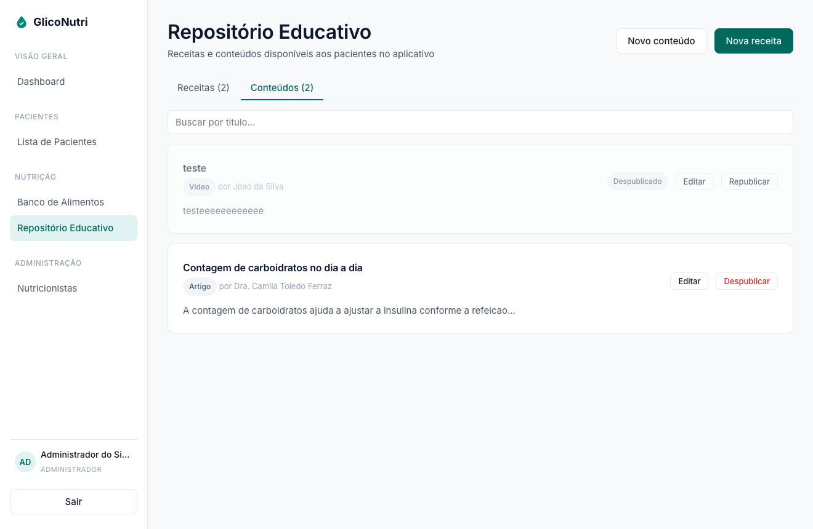
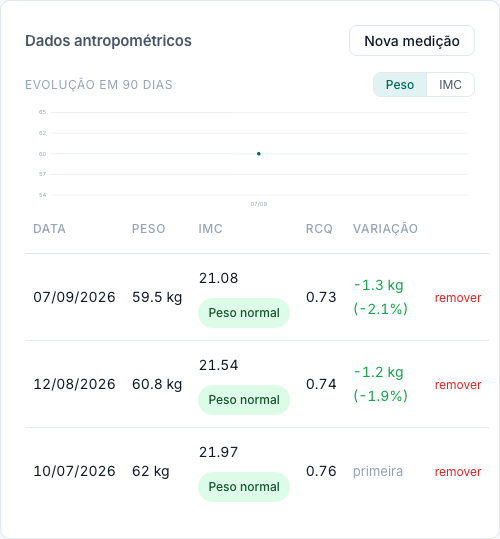
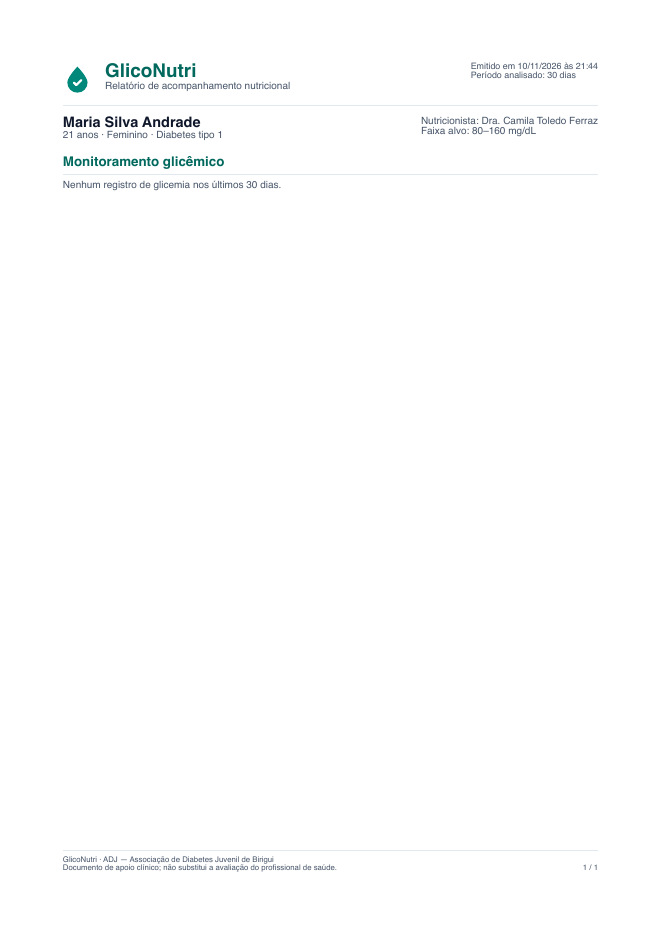
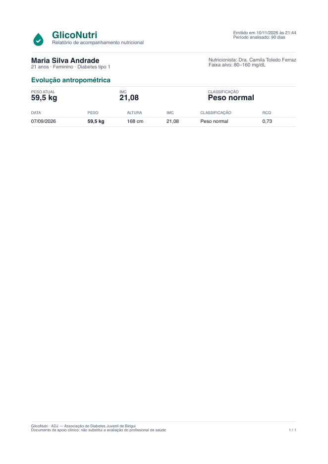
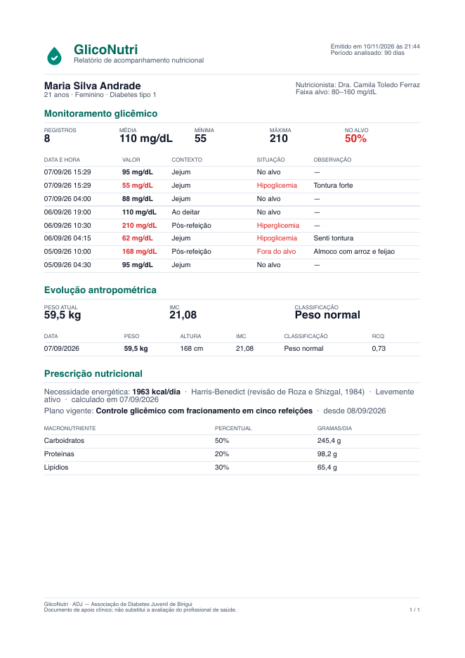

Resposta ponto a ponto ao documento de 11/09/2026 · situação em 10/11/2026
| Assunto | Situação | Onde |
|---|---|---|
| Revisão da equação de Harris-Benedict | Implementado | Seção 2 |
| Distribuição padrão de macronutrientes | Implementado | Seção 2 |
| Índice glicêmico dos alimentos | Implementado | Seção 2 |
| Conta de e-mail do sistema | Funcionando | Seção 3 |
| Credencial do Google e OAuth | Funcionando | Seção 3 |
| Docker na documentação | Feito | Seção 3 |
| Onde o sistema será publicado | Decidido | Seção 3 |
| Especificações do orientador (cinco questões) | 4 feitas · 1 é documento | Seção 4 |
| Campos dos casos de uso sem coluna no DER | Decidido | Seção 5 |
| Favoritos e mídia no conteúdo educativo | Implementado | Seção 6 |
| Ajustes nas telas | Feito | Seção 7 |
| Logo do projeto | Aplicada | Seção 8 |
| Páginas públicas | Reescritas | Seção 9 |
| Aplicativo do paciente (Flutter) | Concluído | Seção 10 |
| Tela de conteúdos e templates dos relatórios | Anexos | Anexos A a D |
Equação energética. Harris-Benedict na revisão de Roza e Shizgal (1984) ou Mifflin-St Jeor. A escolha é do nutricionista a cada cálculo, e a fórmula usada fica gravada junto do resultado. O valor que vem marcado na tela é só sugestão e pode ser trocado.
Macronutrientes. As faixas são as da SBD para diabetes tipo 2: carboidratos de 45 a 60% (padrão 50), proteínas de 15 a 20% (padrão 20) e lipídios de 25 a 35% (padrão 30). Fora da faixa, a tela mostra um aviso em destaque, com cada macronutriente, o valor e a faixa esperada, mas não impede salvar: a conduta é do profissional. O caso de uso UC007 A2 ainda traz as faixas antigas e precisa ser corrigido no documento.
Índice glicêmico. A fonte são as International Tables of Glycemic Index and Glycemic Load Values 2021 (Atkinson et al., Am J Clin Nutr 2021;114:1625–1632). 31 dos 597 alimentos da TACO receberam o valor. Só entraram os casos em que alimento e preparo batem com clareza: batata cozida, pães, leite, iogurte, açúcar, mel, frutas e sucos de laranja. Arroz, feijão, macarrão e mandioca ficaram sem valor, porque a tabela não tem uma entrada equivalente segura. O nutricionista pode informar o valor desses alimentos, e o sistema registra a origem. A conferência item a item está em db/indice-glicemico/correspondencias.csv.
E-mail. O envio funciona pela conta gliconutrismtp@gmail.com, com senha de aplicativo. A senha provisória dos cadastros e o link de redefinição chegam por e-mail.
Login com Google. Funcionando com a credencial que você criou. Só entra quem já foi cadastrado pela ADJ; qualquer outra conta Google recebe a mensagem de acesso negado. Enquanto o app do Google Cloud estiver em modo de teste, cada e-mail usado precisa estar na lista de usuários de teste.
Docker. Entrou na documentação técnica, nas tecnologias e no ambiente de desenvolvimento: o Postgres local sobe por Docker Compose com ./dev.sh up --local. Também está no PDF do back-end, em "Containerização".
Publicação. Decidido em 09/11/2026: o sistema roda localmente, na máquina da apresentação. Isso elimina o risco de hibernação de hospedagem gratuita na hora da defesa. A RN31 (HTTPS) fica registrada como divergência. O redirecionamento para HTTPS e o HSTS já estão implementados e passam a valer se houver publicação.
Coluna de situação preenchida, como você pediu.
| Nº | Tema | O que o sistema precisa ter · como está | Situação |
|---|---|---|---|
| 1 | Herança de usuários | Tabela única usuarios com atributo de perfil (TPH). O TPT saiu. O próprio perfil_id é o discriminador, para não ter duas colunas dizendo a mesma coisa. Os campos obrigatórios de cada perfil viraram restrições CHECK condicionadas ao perfil. | [x] feito |
| 2 | Dados clínicos calculados | A tabela resumo_clinico_paciente deixou de existir como tabela física. O painel continua lendo o mesmo nome, mas agora é uma VIEW, calculada na hora da leitura a partir das tabelas de glicemia e antropometria. Ver a observação abaixo. | [x] feito (view) |
| 3 | Ciclo de alertas e RN27 | O disparo nasce PENDENTE na API e é reenviado até haver registro ou desativação. Depois de 2 horas sem resposta, expira como falha (RN35). Cada tentativa fica registrada em historico_alertas. O ciclo inteiro está na API, então qualquer cliente que a consuma segue o mesmo fluxo. | [x] feito |
| 4 | Diagrama de Casos de Uso | Retirar "Validar Token JWT" e "Registrar Tentativa de Envio". É uma mudança de documento, com o Ramon. No sistema, os dois já são requisitos técnicos, não casos de uso: o JWT é validado pelo framework e as tentativas são gravadas automaticamente. Não há nada a mudar no código. | [ ] a fazer (doc.) |
| 5 | GeradorRelatorio | Não é entidade de domínio: virou a camada de serviço RelatorioService, que monta os três relatórios em PDF (glicêmico, antropométrico e completo) a partir dos dados do paciente. Os templates estão nos anexos B a D. | [x] feito |
Uma trigger continuaria gravando a média e o último IMC numa tabela, ou seja, continuaria guardando dado calculado, que é justamente a violação da 3FN apontada pelo orientador. Só mudaria quem atualiza a tabela. A view não guarda nada: calcula na leitura, então nunca existe versão desatualizada. Ela resolve o problema que a sua resposta descreve ("não se atualizam sozinhos, gerando dados incoerentes") de forma mais completa.
Sugestão: avisar o orientador antes da defesa. Por exemplo: "na implementação, optamos por uma view no lugar da trigger, porque a trigger ainda armazenaria dado derivado; a view calcula sempre a partir da fonte".
Campos dos casos de uso sem coluna no DER. Vale o DER, como você decidiu. O que muda em cada caso de uso:
| Caso de uso | Trecho atual | Correção |
|---|---|---|
| UC002, passo 5 | "preenche o contato e endereço" | "preenche o telefone de contato" (o DER não tem endereço) |
| UC003, passo 2 | "Nome completo, CPF, Data de Nascimento, Sexo" | "Nome completo, CRN, especialidade e telefone" |
| UC003, fluxo A1 | Validar CPF | Remover. A validação passa a ser a unicidade do CRN |
| UC008, passo 7 | "adiciona observações clínicas opcionais" | Remover (o DER não tem esse campo) |
Antes de editar, vale conferir se algum desses campos foi esquecido na modelagem. Se algum precisar existir, o caminho é o contrário: ele entra no DER e no sistema.
Enumerações. São tabelas de cadastro, com índice único sobre a descrição normalizada: "Glicose", "glicose" e "GLICOSE" não convivem. Pré-diabetes entrou como opção no cadastro do paciente. Registro antropométrico: só o nutricionista registra; o paciente apenas visualiza.
Favoritos. Implementados para conteúdos e receitas. Como você lembrou, o DER definitivo ainda precisa receber as duas tabelas de favoritos e a mudança para TPH, para a divergência não aparecer na banca.
Mídia no conteúdo educativo. Fomos pela opção 2, links externos: o conteúdo aceita link de vídeo ou matéria, sem infraestrutura de armazenamento nova. Os seis alimentos da TACO sem macronutrientes continuam sinalizados como lacuna, sem virar zero.
| Tela | O que foi feito |
|---|---|
| Login | Refeita em duas colunas: um painel de apresentação à esquerda e o formulário à direita, com login por senha e por Google. |
| Recuperar acesso | O botão "Voltar ao login" não sobrepõe mais o envio. O mesmo defeito existia na tela de definir nova senha, e foi corrigido lá também. |
| Novo paciente | Formulário centralizado. |
| Acompanhamento do paciente | Botões "remover" padronizados em minúscula. A tabela de dados antropométricos não sai mais do cartão: o peso não quebra linha e a coluna remover fica visível. O histórico de necessidade energética, que tinha o mesmo problema, também foi ajustado. Ver o anexo E. |
Área do paciente na web: ela fica, não é só etapa de teste. Ela também ganhou o mesmo alerta de hipo e hiperglicemia ao registrar uma medição. O texto orienta seguir a conduta da equipe de saúde e procurar atendimento, sem prescrever nada. Esse texto precisa da sua revisão clínica.
O painel e a aba de acompanhamento mantiveram o mesmo visual depois da troca da tabela de resumo pela view.
A gota com check, na cor #00897B, está aplicada nas telas do sistema, nas páginas públicas, no cabeçalho dos relatórios clínicos em PDF e no favicon.
O conteúdo foi reescrito para refletir só o que o sistema faz. Saíram a análise preditiva, a sugestão de ajuste de insulina, a contagem por índice e carga glicêmica, a integração hospitalar, a sincronização e o backup automático, a menção ao CFM, os botões das lojas e os números inflados. Os botões levam a um pedido de demonstração, não a um cadastro. A logo foi corrigida no cabeçalho e no rodapé, as imagens de outros sistemas foram trocadas por capturas reais do GlicoNutri (com dados fictícios) e o rodapé com Preços foi mantido.
App do paciente para Android e iOS, sobre a mesma API: login com troca obrigatória da senha provisória, desbloqueio por biometria, registro de glicemia e de emoção, histórico, medidas, plano vigente, conteúdos, receitas e favoritos. Os lembretes são notificações locais com alarme exato, reagendadas depois de reiniciar o aparelho; o desfecho de cada aviso é informado à API quando o app abre (RN27). Testado no emulador Android em 09/11/2026.
Ele roda no seu PC no emulador Android, apontando para a API local. A instalação e o roteiro de testes estão em mobile/INSTALACAO-E-TESTES.md. Ficaram decisões para você validar: o alerta de glicemia repete a cada 30 minutos, até quatro vezes dentro das 2 horas da RN35; uma medição até 30 minutos antes do horário já atende ao lembrete; e os lembretes de refeição, medicamento e personalizado avisam uma vez só.
1. Revisão clínica do texto do alerta de hipo e hiperglicemia (seção 7).
2. Corrigir os casos de uso: UC002, UC003, UC008 (seção 5) e as faixas do UC007 A2 (seção 2).
3. Atualizar o DER com as tabelas de favoritos e a herança TPH (seção 6).
4. Corrigir o diagrama de casos de uso com o Ramon (questão 4).
5. Avisar o orientador sobre a view no lugar da trigger (questão 2).


Gerados pelo sistema para a paciente de demonstração. Da esquerda para a direita: glicêmico e antropométrico.


